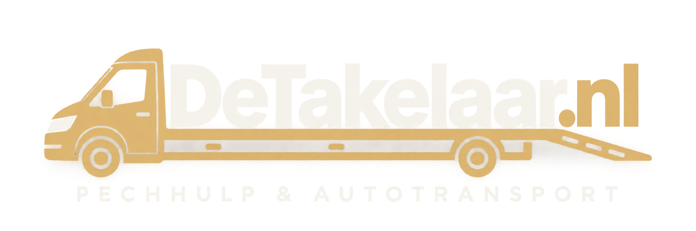
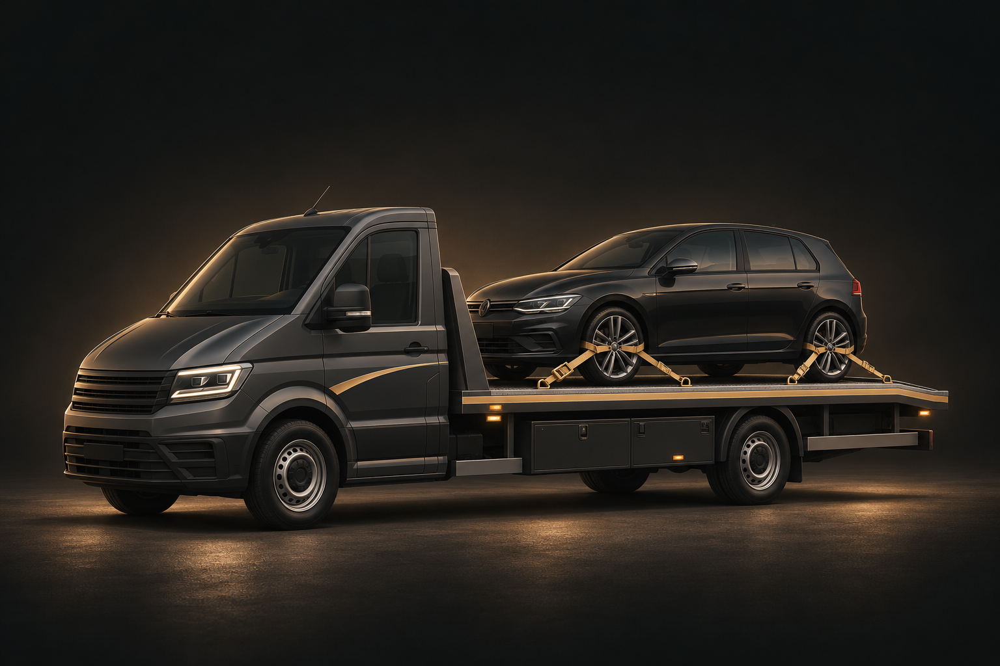

Pechhulp & schadevervoer
Staat je auto stil of heeft hij schade? Vraag vervoer aan naar je garage of een andere gewenste bestemming.
Meer over pech- en schadevervoer
ONDERWEG DOOR HEEL NEDERLAND
Autotransport en pechvervoer in Nederland.
Van pech of schade tot een geplande rit.
Snel — Veilig — Betrouwbaar
Vul je kenteken in en begin je transportaanvraag.
WAT WE VOOR JE DOEN
Van een onverwachte stilstand tot een zorgvuldig geplande verplaatsing. Vertel ons wat je nodig hebt.
Staat je auto stil of heeft hij schade? Vraag vervoer aan naar je garage of een andere gewenste bestemming.
Meer over pech- en schadevervoerEen auto gekocht of vervoer nodig voor je autobedrijf? We vervoeren voertuigen binnen Nederland, ook als ze niet zelfstandig rijden.
Meer over autotransportJe gerestaureerde, gepolijste of gedetailde auto verdient zorgvuldig en schoon vervoer. Bespreek je wensen vooraf met ons.
Meer over zorgvuldig autovervoerWe rijden met een oprijwagen met een toegestane maximummassa van 3.500 kg. Of jouw voertuig mee kan, beoordelen we vooraf op basis van voertuiggewicht, afmetingen en de beschikbare laadcapaciteit.
VAN AANVRAAG TOT AANKOMST
Een auto die stilstaat. Een nieuwe aankoop die naar huis moet. Vertel ons waar je auto staat en waar hij naartoe mag. Wij denken met je mee.
Bespreek jouw transport
Zoek je kenteken op en vul de ophaal- en afleverlocatie in.
Stuur je aanvraag via WhatsApp. Samen bespreken we de mogelijkheden, prijs en planning.
Na bevestiging vervoeren we je auto volgens de gemaakte afspraken.
ONDERWEG IN NEDERLAND
Verkeersinformatie wordt opgehaald…
LATEN WE JE OP WEG HELPEN
Een paar gegevens. Persoonlijk contact.
Een duidelijke afspraak.
De aanvraag is vrijblijvend. Je boekt pas vervoer nadat we de prijs en planning samen hebben bevestigd.
Online contact openen lukt niet. Bel 06 8299 0303 om je aanvraag te bespreken.
GOUDA · RIJSWIJK · HEEL NEDERLAND
Autotransport nodig? Bespreek je ophaal- en afleverlocatie met DeTakelaar.nl. We stemmen de mogelijkheden, prijs en planning persoonlijk met je af.
Neem vooraf contact op over ophalen of afleveren op een van deze locaties. Bel 06 8299 0303 of stuur een WhatsApp-bericht.
JOUW ERVARING TELT
Heb je jouw auto door DeTakelaar.nl laten vervoeren? Met een eerlijke review help je andere klanten bij hun keuze. Deel gerust wat goed ging en wat beter kan.
ANTWOORD OP JE VRAGEN
DeTakelaar.nl verzorgt autotransport binnen Nederland voor particulieren, autobedrijven en garages. Je kunt vervoer aanvragen bij pech of schade, voor een gekochte auto of voor een gerestaureerde of gedetailde auto.
De prijs wordt per aanvraag afgesproken. Geef het kenteken, de ophaal- en afleverlocatie en de staat van de auto door. DeTakelaar.nl bespreekt de mogelijkheden, prijs en planning voordat je vervoer bevestigt.
Je kunt vervoer aanvragen voor een auto die niet zelfstandig rijdt. Vermeld of de auto kan rollen en sturen en of er schade is. DeTakelaar.nl beoordeelt vooraf of het vervoer mogelijk is.
Je kunt autotransport aanvragen met een ophaal- en afleverlocatie binnen Nederland. De beschikbaarheid en planning worden persoonlijk met je afgestemd.
Vul je kenteken en de transportgegevens op deze website in. Open daarna je aanvraag in WhatsApp en verstuur het bericht zelf naar 06 8299 0303. Je kunt ook bellen. Het vervoer is pas afgesproken na bevestiging van de prijs en planning.